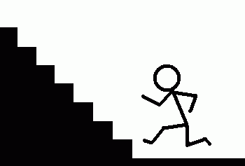

나는 특별한 사정이 없는 한 두칸씩 올라간다.
사람들은 무의식중에 몸에 배어있는 몇가지 우선순위를 갖고 있다.
예를 들어 걸어갈때는 오른발이 먼저 나간다던지. 뒤를 볼 때는 왼쪽으로 고개를 돌린다던지. 코를 긁을 때는 오른손을 쓴다던지 하는 것들이다.
나는 몸의 균형을 매우 중요하게 생각한다. 심지어는 양치질이 양손의 균형을 깨뜨린다는 생각 때문에 왼손으로 양치질을 시도하다가 콧구멍을 찌른적도 있다. (매우 위험하므로 어린이는 따라하지 말자)
계단을 두칸씩 올라가다보면 양쪽 발의 균형이 깨지기 쉽다.
아주 간단한 논리다. 왼발로 계단을 오르기 시작한다고 가정하면 최종적으로 계단 끝에 올라섰을때 좌우 양발이 올라간 계단 수는 왼발:오른발=N:N+1±1 이 된다.
수식으로 써 놓으니까 이상하게 보인다고? 그냥 오른발은 왼발보다 최대 2계단 더 올라갔다는 소리다.
즉, 왼발이 N 계단을 올라갔다면 오른발은 N 혹은 N+1 혹은 N+2 계단을 오르게 되는 것이다. 확률로는 N(25%), N+1(50%), N+2(25%) 가 된다. 이유는 그냥 계단수를 한계단씩 높여가면서 왼발부터 세보면 쉽게 알 수 있다.
결과적으로 오른발부터 계단을 2칸씩 오르게 되면 오른발의 부담이 커질 가능성이 75%나 된다는 것이다. 평균적으로 오른발에 1계단의 부담이 가중될 것이다. 이래선 안된다.
어떻게 하면 이것을 해소할 수 있을까?
해답도 간단하다.
먼저 왼발로 한계단을 올라간 뒤 2계단씩 올라가면 된다.
왼발 1계단, 오른발 2계단, 왼발 2계단, 오른발 2계단...... 이런식이다.
이렇게 하면 최종적으로 왼발이 N 계단을 올라갔을때 오른발이 올라간 계단 수는 N-1(25%), N(50%), N+1(25%) 가 되어 평균적으로 N 이 나온다. 물론 이것은 확률이다. 실제로 이 방법을 사용해 계단을 올라가게 되면 왼발이나 오른발이 1계단 더 올라갈 확률이 50%가 된다.
인간은 태어날때부터 이미 균형과는 거리가 멀다. 그리고 죽을때까지 거의 모든 면에서 불균형을 만들어 나간다.
여러분도 앞으로 계단 오르기 쯤은 이렇게 해보는것이 어떨까?